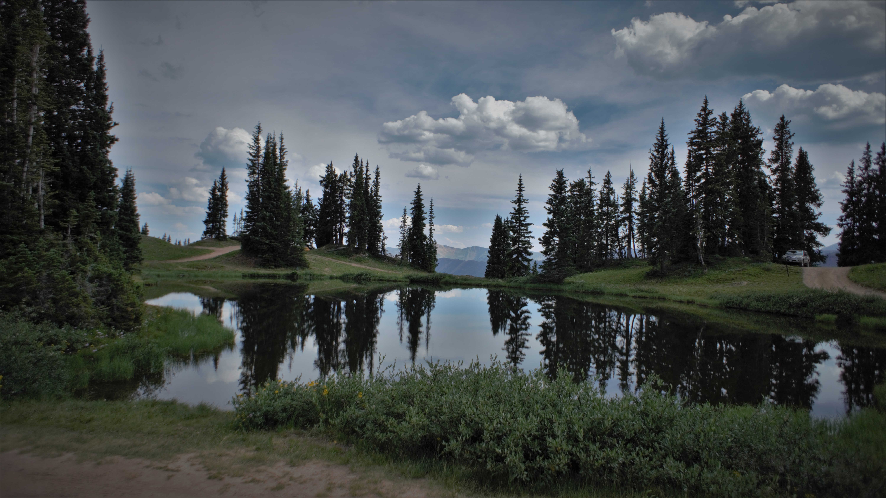

About this website
This portfolio website serves as a central hub for showcasing my projects, experience, and professional skills. Sections included are:
- Resume: Details about my professional experience, including roles and responsibilities.
- Blog: Posts I have written. These include guides about technologies I use.
About me
As of March 2024, I am an IT professional that is transitioning towards a more development-oriented role. My journey into programming began during high school, where I had the privilege of enrolling in college-level courses at my local institution while still in 10th grade. It was there that I encountered a professor whose mentorship deepened my passion for programming and the outdoors. Although circumstances led me to initially pursue a career in IT support, I have remained committed to becoming a proficient programmer. In 2023, I started to redouble my efforts to establish myself as a professional software developer.
You'll find links to my GitHub and my LinkedIn profile:


Technologies
The following was used to create this website:


Thank you for looking!